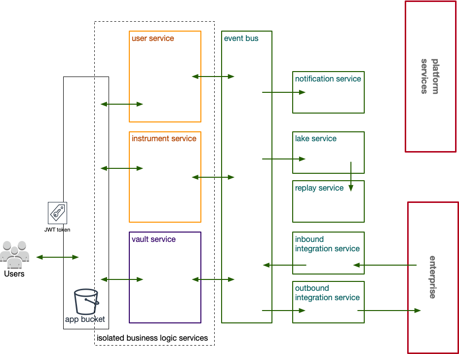
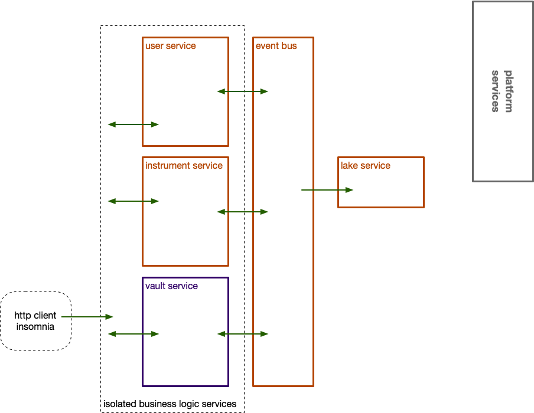
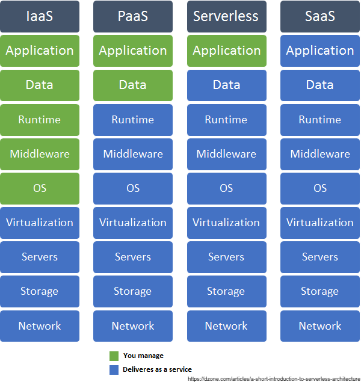

### about me
- sysadmin as a child
- web infrastructure since late 90's
- payment processing since mid 2000's
- integration consultation since 2010
- cloud native architecture, eng and transformation since 2015
- feedback and observations in green
so im here to talk to you about the benefits of cloud native development. which for me means...
serverless...why?
mastery of serverless workoads give you:
- 2+ order of magnitude cost saving
- insanely low operational overhead
- improved security profile
warning - required discipline
themes
- business and operational benefits and challenges
- what is a chassis
- key architectural concerns
- technical demonstration
our example - bank generic

our example - banc generic
focus

deploy the base services (orange)
themes
- business and operational benefits and implications
- what is a chassis
- key architectural concerns
- technical demonstration
benefits
- true pay as you go - orders of magnitude savings
- favourable shift in responsibility exposure
- low ops - development becomes operations
favourable shift in shared responsibility
increased abstraction means less management

low ops
- nothing but application code to manage
- automate builds from test enabled repository
- simple declarative security per application
- environments deployed from templates with guardrails
challenges
- horrify your friends in the enterprise DA
- but dont worry, devOps and secOps will come to love you
- enterprise doesnt like javascript
- open source all the way down.
themes
- business and operational benefits and implications
- what is a chassis
- key architectural concerns
- technical demonstration
deployment chasis - what and why?
the deployment chassis answers the following questions
- how do we arrange code, config and resources?
- how do we apply developer tools?
- how do we enable integration and deployment workflows?
- debug and test
Arranging code, configuration and resources
- resources
- configuration
- functions
- deployment tools
resources
- infrastructure as code definitions
- represent platform software components
- granular policy based access
configuration
- the glue - serverless.yml
- environment configuration
- populating environment configuration
deployment tools
- packager: webpack or parcel
- script engine: npm
- deployment tool: circle
all js and yaml
debug and test
- cloud dogfood: use platform tools
- unit testing and tracing
- live replica per developer
cloudfood : use platform tools
- dashbird
- cloud provider monitoring tools
- advanced tracing - honecomb.io
unit testing and tracing
- standard unit testing at module level
- tracing and observability
live account development
- per user and per stage independent accounts
- policy guardrails, logging and monitoring appied
- compliance testing applied
themes
- business and operational benefits and implications
- what is a chassis
- key architectural concerns
- technical demonstration
architecture driven engineering
- everything is abstracted
- this is the catch
- discipline required
serverless
driven by good architecture
- good design all the way down
-
- event driven/stateless
- different type of coupling
- exmaples
design all the way down
- discovery: event storming
- domain driven design
- REST(like) api's
- cloud native patterns
event driven
user feedback
different type of coupling
use cases / examples
- static web app distribution
- decompose a faulty monolith
themes
- business and operational benefits and implications
- what is a chassis
- key architectural concerns
- technical demonstration